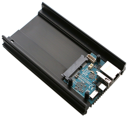

Nextcloud-snap and BTRFS
written by ushills on 2019-03-11
The BTRFS is a copy-on-write (COW) alternative filesystem type to the more traditional Linux filesystems of ext3/ext4 and is now considered to be sufficiently stable to be included with the majority of Linux Operating Systems and is the default now with OpenSuse.
BTRFS has a number of significant advantages compared to more traditional filesystems and a couple of these are great for server use, particularly with a Nextcloud instance. The most significant feature, in my opinion, is the ability to take atomic snapshots of the system and restore them in place, which the filesystem just treats as a power interruption. Secondly, these snaphots take up little room as they only store the differences from the main file system, this is also great for efficient incremental backups.
What this means with Nextcloud and in particular Nextcloud-snap, with its one directory approach, it that you can take a BTRFS snapshot, back the snapshot up (more on that later!) and if anything goes wrong, restore the Nextcloud instance as it was at the time of the backup without requiring any additional re-configuration or complicated database exporting etc which can be complicated with a standard Nextcloud installation.
To configure nextcloud-snap to use this simplified backup/restore structure, you have to install your operating system with a BTRFS filesystem. With Armbian and Debian, this is an option when installing and consists of setting your system to use the whole disk as a partition and to set that partitions format as BTRFS rather than the default of Ext4.
The concept of BTRFS differs from traditional guidance with Ext4 and there is no need to create other partitions for /home, /var etc. subvolumes take the place of partitions with BTRFS and as I have learned have major advantages.
Once you have your OS using BTRFS, you will notice, little or no difference initially, however, here is the good part.
Create a BTRFS subvolume
If you already have installed snap or Nextcloud, you need to move your snap directory, create a subvolume and move the original snap directory back as follows.
You will need to do this as root or using sudo
If you already have installed snap or Nextcloud, you need to move your snap directory, create a subvolume and move the original snap directory back as follows.
$ sudo mv /var/snap /var/tempsnap $ sudo btrfs subvolume create /var/snap $ sudo mv /var/tempsnap/* /var/snap/
Make a snapshot
Once you have a working BTRFS subvolume which you can test with:
$ sudo btrfs subvolume list /
which should list the directory /var/snap as a valid subvolume, making a snapshot is as easy as:
$ sudo btrfs subvolume snapshot -r /var/snap /var/snap/BACKUP
This creates a read-only snapshot which is an exact copy of the folder at the time the snapshot was made, with BTRFS the significant advantage is that this snapshot takes up very little additional space as only the changes between the snapshot and the original files are stored. The unchanged files are similar to symlinks to the original files with only the changed parts of the files stored.
This snapshot can be backup up with traditional backup methods i.e. rsync, cp, rdiff-backup, s3cmd or similar, however, there are specific backup applications available for BTRFS that take advantage of the efficient incremental backup available with BTRFS and this is covered in my next post.
Continue readingInstalling Nextcloud with Nextcloud-Snap
written by ushills_couk on 2019-03-10
Following on from my previous post, this time when I upgraded my hardware, to run Nextcloud I installed Nextcloud-snap which is Nextcloud packaged as a snap.
For those who have not come across snaps and the snappy package manager before Snaps have a number of advantages.
Although introduced by Canonical (the organisation behind Ubuntu), they generally work across the majority of Linux Distributions and are OS agnostic, i.e. the snap does not have to be compiled for different OS's and as long as you can install the Snappy Package Manager you can install almost any snap.
The other significant advantage, particularly, with a Nextcloud instance is that that the snap not only installs Nextcloud but installs all the required dependencies in a single sandboxed environment that just works out of the box. Also, snaps automatically upgrade and upgrades are checked daily, therefore, the nextcloud instance will always be updated to the latest stable version.
Installation, once you have the Snappy Package Manager installed, is as simple as:
sudo snap install nextcloud
The stable Nextcloud-snap currently installs:
- Nextcloud 15.0.5
- Apache 2.4
- PHP 7.2
- MySQL 5.7
- Redis 4.0
- mDNS for network discovery
Install Snap
Then install snap, using the guide here for your installation, for Debian and other APT based distributions this is.
$ sudo apt update $ sudo apt install snapd
Install Nextcloud-snap
Finally, once you have snap the command to install Nextcloud-snap is universal with.
$ sudo snap install nextcloud
Follow the configuration guide, although not a great deal of configuration is required and it will work out of the box, the essential settings I change are:
sudo snap run nextcloud.occ enable-https lets-encrypt sudo snap set nextcloud php.memory-limit=1512M
The above enables HTTPS and provisions a Lets-Encrypt certificate for your Nextcloud webserver and increases the memory available from the default 512Mb to 1.5Gb of the 2GB available on the Odroid HC1.
Snap advantages
advantage, and one I only recently realised, is that all of the snap configuration and data is contained in one folder, my my case /var/snap/nextcloud, which means that you can back up the folder in its entirety and restore it by copying it to a /var/snap folder on another machine with Nexcloud-snap installed or restore a backup in place without having MySQL database issues or other issues with interdependancies.
This self-contained approach with snaps has a major implication with backing up and restoring, especially when considered in the context of running your OS using the BTRFS filesystem, which is the subject of my next post.
Continue readingUsing Nextcloud with Odroid HC1
written by ushills_couk on 2019-03-09
For those that do not know Nextcloud is an open-source alternative to Dropbox, that you can host yourself on a Virtual Private Server (VPS), like Amazon EC2, Digital Ocean Droplets or your own on-premise server. As such not only do only you have access to your information (enhanced privacy) but the side benefit is that you learn some server administration along the way.
I have been using Nextcloud for a number of years now on a Raspberry Pi 3 and although I was happy with the performance, the Raspberry Pi is slightly limited with disk access speed due to only having USB 2.0 connections.
While searching for a replacement I came across the Odroid HC1 which is designed to work as a home server. The Odroid HC1 comes with a SATA connection to connect to an internal 2.5' hard drive and has plenty of horsepower with Eight Cores (Samsung Exynos5422 ARM® Cortex™-A15 Quad 2.0GHz/Cortex™-A7 Quad 1.4GHz), 2GB of DDR3 Ram and a large heat sink on the bottom. I have a hard disk drive connected to mine but you could just as easily use an SSD.

With the native SATA connection and Gigabit Ethernet, the HC1 is a significant upgrade over the Raspberry Pi (even the 3B+) and is equivalent to most VPS.
Having used many different operating systems on single board computers (SBC) in the past, this SBC is well supported by Armbian which is a fork of Debian, however, other OS's such as DietPi and others are also available and stable.
In my next post, I will explain how I installed Nextcloud and some of the important choices I made to improve the resilience of this self-hosted installation.
Continue readingUsing AWSCLI with Nextcloud
written by ushills_co_uk on 2018-05-13
Amazon s3 is a cheap and secure place to store files and therefore ideal for off-site secure backups.
There is a convenient python command line interface for linux that you can install with the following. console
sudo pip install awscli
Go to IAM Management Console and create a new user and create access keys
sudo aws configure
AWS Access Key ID [None]: {enter access key}
AWS Secret Access Key [None]: {enter secret key}
Default region name [None]: eu-west-1
Default output format [None]:
To list your buckets use
sudo aws s3 ls
Now create a script that you can call to backup your files to AWS s3. I use the example below, and store the script in /etc/s3backup/
sudo nano s3_backup_nextcloud.sh
#!/bin/bash
ocdatapath='/var/www/owncloud/data'
s3backuppath='s3://{s3 bucket name for backup}'
day=`date +%Y-%m-%d:%H:%M:%S`
echo 'Starting s3 backup for' ${day}
#command to backup to s3 server
#exclude the tmp directory and .* files
aws s3 sync ${ocdatapath} ${s3backuppath} --exclude "/tmp" --exclude "updater-backup" --exclude "lost+found" --exclude ".*" --exclude "~*" --acl private --sse > /var/log/s3backup_${day}.log
Note that the suffix -sse adds server-side encryption to all uploaded files and therefore keeps your files secure but easily accessible without the need to store encryption keys and the logs of each backup are maintained under /var/log/s3backup_date.log.
Finally, make sure to make it executable with:
sudo chmod +x /etc/s3backup/s3_backup_nextcloud.shI have a crontab with the following which runs the backup every 6 hours.
0 0,6,12,18 * * * /etc/s3backup/s3_backup_nextcloud.shContinue reading